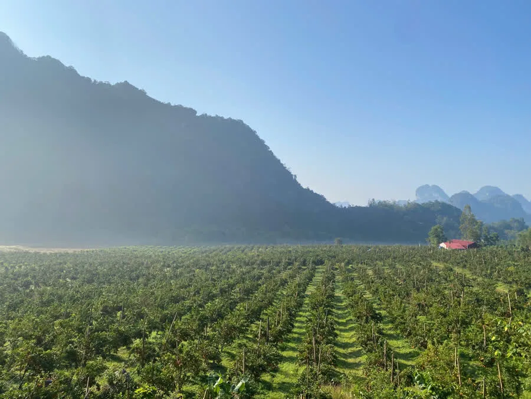

Hợp tác xã Thế Hưng Organic (THOC) là hợp tác xã nông nghiệp ở xã Vũ Lăng, vùng núi đá vôi Bắc Sơn, tỉnh Lạng Sơn. Các thành viên trồng và tự chế biến hai sản phẩm chính: Tinh Bột Sắn Dây và Cam Đường Canh.
Sắn dây: tự trồng, tự lọc, tự sấy
Sắn dây được trồng trên nương dưới chân núi đá. Củ đào về được rửa sạch, nghiền, rồi lọc và lắng nhiều lượt bằng tay đến khi bột trắng trong. Từ năm 2026, hợp tác xã đã đầu tư lò sấy nhiều tầng thay cho phơi nắng, nên bột khô đều, không bám bụi và không phụ thuộc thời tiết. Bột không tẩy trắng, không pha thêm gì.
- Trồng giữa núi đá, dây leo phủ kín giàn.
- Đào củ, đưa về xưởng trong ngày.
- Rửa sạch, nghiền nát, ép lấy nước bột.
- Lọc và lắng nhiều lượt, thay nước đến khi bột trắng trong.
- Sấy lò nhiều tầng, nhiệt độ cài sẵn.
- Ra lò là đóng túi.
Cam Đường Canh đạt VietGAP
Vườn cam của hợp tác xã đạt chứng nhận VietGAP số 112/CN-TĐC-TT-20-0012, theo tiêu chuẩn TCVN 11892-1:2017, do Công ty Cổ phần Khoa học và Công nghệ NATEK cấp ngày 23/12/2025, hiệu lực đến 22/12/2028. Giấy chứng nhận ghi tên cũ của hợp tác xã là Hợp tác xã Cây Ăn Quả Nhung Giang (đã đổi tên thành Hợp tác xã Thế Hưng Organic).
Cam chỉ hái khi đã chín trên cây, mùa thu hoạch khoảng tháng 11 âm lịch đến tháng 1 năm sau. Ngoài mùa, nhà mình nhận đặt trước và báo khi có hàng.

Điều nhà mình cam kết
- Chỉ nói điều có thật về sản phẩm: không hứa công dụng chữa bệnh, không gắn chứng nhận chưa có.
- Ảnh và video trên trang đều chụp tại nương, vườn và xưởng của hợp tác xã.
- Hàng hư do vận chuyển, giao sai hoặc lỗi sản xuất được đổi mới hoặc hoàn tiền (xem chính sách).
Thông tin liên hệ
- Tên: Hợp tác xã Thế Hưng Organic (THOC)
- Trụ sở: Thôn Liên Lạc, xã Vũ Lăng, tỉnh Lạng Sơn
- Nơi sản xuất sắn dây: Thôn Nam Hương, xã Vũ Lăng, tỉnh Lạng Sơn
- Zalo / điện thoại: 0979 502 000
- Email: hello@thehungorganic.com
Đối tác mua sỉ, đại lý, quán chè: xem trang mua sỉ. Khách nước ngoài: English.